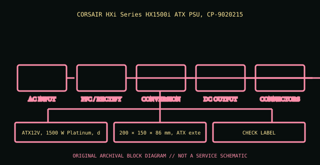

[ POWER CONVERSION // IDENTIFIED MODEL ]
Corsair HX1500i (CP-9020215)
CORSAIR HXi Series HX1500i ATX PSU, CP-9020215. This entry covers the specific model or bounded historical system assembly identified here; suffixes and supplier revisions are not presumed equivalent.

HIGH-VOLTAGE SAFETY: Disconnect mains before external inspection. Never open a PSU. Internal capacitors can retain dangerous charge after disconnection. Do not probe or repair its interior; use qualified service or replace it.
Model-specific ratings & fit
| Manufacturer identity | CORSAIR HXi Series HX1500i ATX PSU, CP-9020215 |
|---|---|
| Form factor / generation | ATX12V, 1500 W Platinum, digital |
| AC input | 100–240 V AC, 47–63 Hz, 15–7.5 A. |
| DC output | +12 V 125 A (1500 W); +3.3 V/+5 V 25 A each, 150 W combined; −12 V 0.5 A; +5 VSB 3 A. |
| Dimensions / mounting | 200 × 150 × 86 mm, ATX extended length. |
| Connectors | Fully modular ATX 24-pin, multiple EPS and PCIe, SATA and peripheral; verify CP-9020215 manual connector counts and Corsair Link/iCUE interface. |
| Revision distinctions | CP-9020215 is 2022-era HXi 1500 W; not older HX1200i/1500i family or later HX1500i ATX 3.x refresh. |
Compatibility & safe handling
- Verify full model, suffix, region and revision using the actual unit nameplate and matching manufacturer manual. Wattage and plug shape alone do not establish compatibility.
- Check AC input range, rail and combined output limits, derating, signaling/pinout, cooling direction, mounting and system qualification before installation.
- PSU modular-side cables are model-specific. Never reuse an unapproved lead; a matching plug can carry a different pinout.
- Server hot-plug is permitted only in qualified host configurations and under the host’s documented redundancy/live-service procedure.
- Never open or internally probe the supply. Retire damaged, wet, burnt, corroded, modified or unidentified units.
Revision & archival notes
CP-9020215 is 2022-era HXi 1500 W; not older HX1200i/1500i family or later HX1500i ATX 3.x refresh.
Archive exact part revision and monitoring software/manual. Long chassis needs clearance; modular leads must be HX1500i-approved.
Photograph the full nameplate, model/FRU, supplier, revision/date code, line selector, cable ends, mounting orientation and source-document issue. Keep observed label data separate from test results.
Manufacturer or primary references
- Corsair HX1500i (CP-9020215) — manufacturer/product or primary technical referenceCORSAIR HXi Series HX1500i ATX PSU, CP-9020215. Check the exact revision, region and system support information.
- Intel ATX / ATX12V Power Supply Design GuideReference for desktop ATX context only. Proprietary historical and hot-swap server outputs are not made interchangeable by ATX standards.
The specific PSU nameplate and corresponding model/service documentation remain controlling.